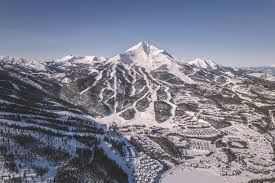
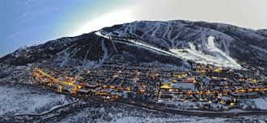
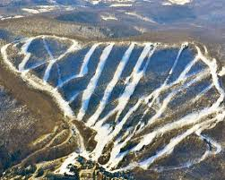
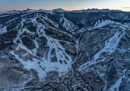
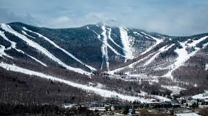

Favorite Ski Mountains
These are some of my favorite mountains that I’ve skied over the years. Each one offers a different experience, scenery, and type of terrain.
Mountain list
Big Sky
Big Sky has some of the largest terrain I’ve ever skied, with long runs and incredible views that make every trip memorable.
Park City
Park City is massive and has terrain for all skill levels, making it a great place to ski with friends.
Jiminy Peak
Jiminy Peak is where my love for skiing began and will always be a special mountain to me.
Beaver Creek
Beaver Creek is known for smooth grooming and challenging terrain, especially for more advanced skiers.
Killington
Killington is known for its long season and wide variety of trails, which is why it’s one of my favorite places to ski.
Copper Mountain

Copper Mountain naturally separates terrain by difficulty, making it easy to find runs that match your skill level.